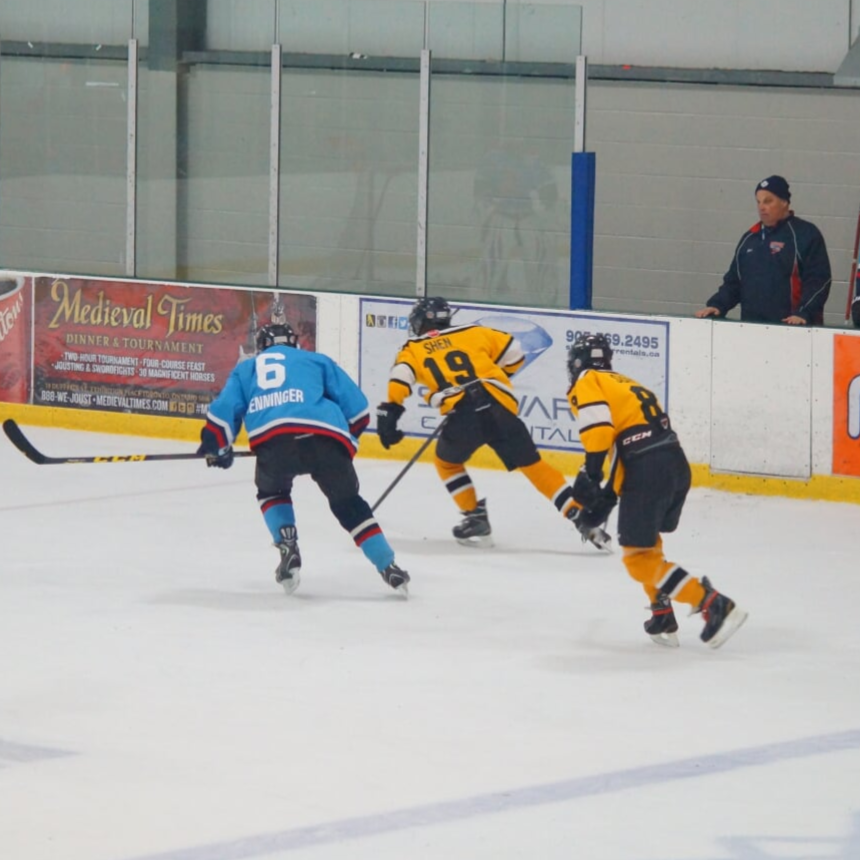

I'm Minhall Shen,
and welcome to my website! I'm from Mississauga, Ontario, and I’m a first year student at the University of Waterloo in the honours mathematics program. I’m an aspiring developer hoping to explore the world of programming in the coming years and I always strive to learn new things and improve my abilities.
I started programming in grade 11 when I took an introductory high school computer science course. Since then, I have:
- learned the basics of Python
- made an employee management system using NetBeans and Java
- explored android app development with Android Studio and Java
- developed a personal website (this one!) using HTML and CSS
- learned the functional language Dr.Racket and completed various projects using it
As you browse this website, I hope that you will learn lots about me and my plans for the near future. If you have any questions, feel free to contact me!
Why I love programming...
Growing up, I had always loved playing music. I was inspired by brilliant composers and artists who took a combination of notes and musical elements and turned them into a masterpiece. These notes and musical elements are dull, mundane, and almost meaningless on their own, but there are countless ways to arrange these notes to create a beautiful piece of art that anyone from any background can enjoy.
This is also the reason why I love programming. When I first started programming, I suddenly realized that music and programming are alike. Each character typed is like a note, meaningless by itself, but when put together in the right way, it could launch a rocket, drive a car or run simulations; the possibilities are endless. Although I am still an amateur, I treat programming as a tool to create something that interests me, and I hope that in the future, I will be able to help millions of people with my code.
More about me...
Besides programming, here are some other things I enjoy doing:
Hockey - Growing up in Canada, naturally, I would be exposed to hockey. I fell in love with this sport when I was 9 years old and until recently, I played competitively. Some of my best memories were on the ice and the sport has taught me about teamwork, perseverance and community. While it has been some time since I last hit the ice, hockey still holds a special place in my heart.
Music - When my mother sent me to piano lessons at the age of 5, I fell in love with the instrument. While thousands of hours were spent in preparation for practical exams, I never regretted a single minute of practice as it opened up the world of music to me. In times of stress and loneliness, I would always go to music. Whether it be listening to Spotify or playing the piano, it would always put my mind at ease.
Debate - Growing up, I was rather shy and introverted. In the first few weeks of high school, however, I found myself stumbling into the debate club. At first, I was petrified at the idea of preparing a speech in 15 minutes and delivering it in front of judging eyes. However, as I attended tournaments, I found myself speaking more fluently and I could articulate my ideas clearly. Debate has honed my speaking and critical thinking skills, but more importantly, I stepped out of my comfort zone to try something unfamiliar and intimidating.